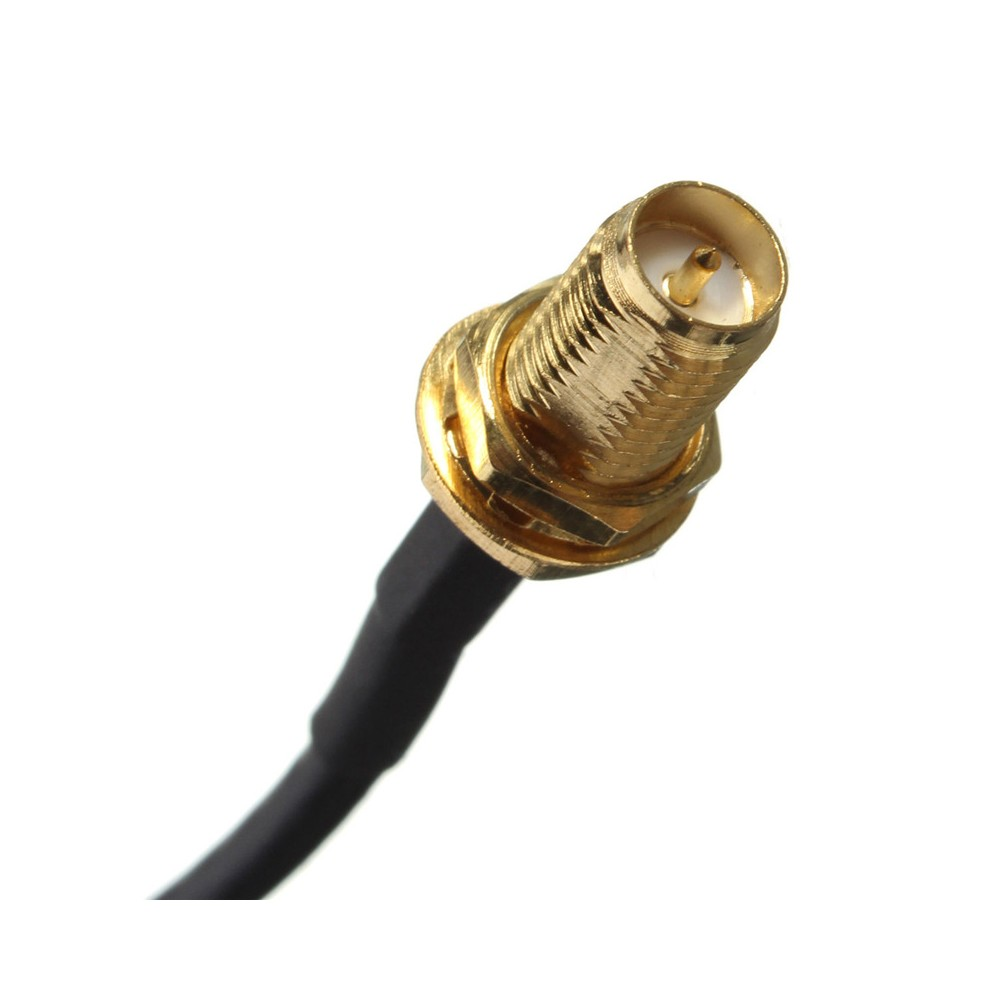

Antenos GSM/ UMTS/ HSDPA / WLAN | Antenos, TV sign. Atšakotuvai,...
Meniu Nustatymai Nemokamas pristatymas nuo 80 Eur. Neseniai žiūrėta 0 Prisijungti / Registruotis
837354093
omedita@omedita.lt
Daugiau prekių. Prekių nerasta 0 Pirkinių krepšelis 0 prekė(s) - 0,00 € Jūsų pirkinių krepšelis yra tuščias. Akcijos Apie mus kontaktai Naudojimo sąlygos privatumo politika epa Nauji produktai Pradžia Antenos, TV sign. Atšakotuvai, selektoriai Antenos GSM/ UMTS/ HSDPA / WLAN KATEGORIJOS Antenos, TV sign. Atšakotuvai, selektoriai TV sign.dalikliai, rozetės RD signalui Teleskopines antenos TV kanalų selektoriai Antenos TV ir FM signalams Automobilinės antenos jų jungtys Antenos GSM/ UMTS/ HSDPA / WLAN Ant. signalo lygio, SBK matuokliai. Antenų laikikliai Ant. stiprintuvai, simetrizatoriai, moduliatoriai, konverteriai. Automobilių elektronika Automobilinių grotuvų ISO jungtys Automagnetolų lanksčios jungtys Automagnetolos, Automobilio FM siųstuvai (transmiteriai) Automobiliniai stiprintuvai, priedai jiems prijungti Automobilinės lemputės CB radio stotelės ir jų priedai Automobilinės maitinimo jungtys, CD laidai Garsiakalbiai ,kolonėlės automobiliams Žemo dažnio automobilinės garso kolonėlės, garsiakalbiai Žemo dažnio kolonėlės tuščia dėžė Aukšto dažnio garsiakalbiai Plačiajuosčiai garsiakalbiai, kolonėlės Tuščia dėžė garsiakalbiams Garsiakalbių priedai Maitinimo šaltiniai, pakrovėjai LED žibintai,lemputės automobiliams Automagnetolų dėklai, rėmeliai ,raktai Jungikliai ,šepetėliai automobiliams Autom. vaizdo regist. navigacijos termometrai Apsaugos sistemos automobiliams GPS/GSM ir mobilių tel. priedai Automobilių parkavimo radarai, kameros Automobilinė įranga ir įrankiai Baterijos, akumuliatoriai. Akumuliatorių NiCd, NiMh, Li-Ion celės Videokamerų ir fotoaparatų akumuliatoriai ACER ,BENG Canon Casio Fuji,Pentax JVC Kodak Konica,Minolta Kyocera Nikon Olympus Panasonic Pentax Samsung,Sanyo Sharp,Sony Elementai, baterijos Diskiniai elementai Baterijos cilindrinės Baterijos stačiakampio formos Baterijos klausos aparatams Akumuliatoriai švino Akumuliatorių paketai telefonams ir kitiems įreng. Laikiliai baterijoms, akumuliatoriams Akumuliatoriai mobiliems ir kitiems įrenginiams Li-polymer pramoniniai prizminiai elementai,baterijos Akumuliatoriai įrankiams Buitinė technika ir jos dalys Lazerinė galvutė Viryklių dalys Dulkių siurblių dalys Įvairios buitines technikos dalys Kaitinimo elementai Mechaninės dalys ir kita Mikrobangų krosnelių dalys Buitinė technika Skalbimo mašinos durų tarpinės, užraktai Skalbimo mašinų dirzai, pompos Šaldytuvų, šaldiklių dalys Video galvutės Patefono galvutės,adatos Kavos aparatų dalys,filtrai gartraukiams Guoliai, guoliavietės, kryžmės, būgnų dalys Variklių šepetėliai Variklių AC angliniai šepetėliai Elektrinių įrankių angliniai šepetėliai Variklių DC angliniai šepetėliai Skalbykliu riebokšliai Skalbimo mašinų amort.ir kitos detalės Buitinė chemija ir priedai Skalbimo mašinų jungikliai Garso-vaizdo technika, jos dalys Magnetofono galvutės audio Ausinės Garsiakalbiai Apvalūs plačiajuosčiai garsiakalbiai Aukšto dažnio garsiakalbiai Žemo dažnio garsiakalbiai Mini garsiakalbiai Garsiakalbiai elipsės formos Plačiajuosčiai garsiakalbiai stačiakampiai Garsiakalbių grotelės Garso kolonėlių, filtrų, garsiakalbių dalys Mikrofonai Garso kolonėlės,kolonėlių stovai Žemo dažnio automobilinės garso kolonėlės Lemputės LCD monitoriui, keitikliai Garso stiprintuvai, pultai, filtrai, megafonai Foto aksesuarai Varikliai Garso ir vaizdo signalų siųstuvai ir komutatoriai Garsiniai signalizatoriai, sirenos Kvadratiniai dirželiai garso technikai Plokšti dirzeliai garso technikai Įrankiai, prietaisai Atsuktuvai Įrankiai konstravimui ir montavimui Pincetai, skalpeliai, peiliai Replės, kąstukai Dujiniai lituokliai, degikliai, žiebtuveliai Išlitavimo įrankiai ir medžiagos Litavimo, medžio deginimo stotelės Lituokliai Elektriniai įrankiai Reples jungčių užspaudimui Lituoklių antgaliai ir kaitinimo elementai Atsuktuvų ir raktų rinkiniai,keraminiai atsuktuvai Lupos,teleskopai, optikos prietaisai Profesionalus izoliuoti įrankiai Ultragarsinės plovimo, litavimo vonelės Skaičiavimo mašinėlės, dėžutės detalėms, įrankiams Jungikliai Jungikliai įvairūs Jungikliai šliaužikliniai,DIP Jungikliai klavišiniai Jungikliai mygtukiniai Jungikliai pramoniniai Jungikliai sukamieji Jungikliai tumblerinai Jungikliai įrankiams Jungikliai automobiliams Galinės padeties jungikliai Jungikliai joystick tipo Jungikliai buitinei technikai Elektros jungikliai Kabeliai, laidai Apsauginiai kabeliai Elektros laidai Garsiakalbių laidai 2-gyslų Koaksialiniai kabeliai Kompiuteriniai laidai, kabeliai Jungiamieji laidai su antgaliais Maitinimo laidai Mikrofoniniai, audio - video ekranuoti laidai Montažiniai laidai Laidinių telefonų laidai Laidai jungiamieji 220V, ilgikliai Varinė lakuota viela ,nichromo viela HDMI ir DVI kabeliai, perėjimai Jungiamieji kompiuterių ir nešiojamų įrenginių kabeliai Jungtys Antgaliai ir kontaktai laidams Jungtys duomenų perdavimui, DB,VGA jungtys Automobilinės maitinimo,diagnostikos jungtys Aukšto dažnio jungtys (koaksialinės) Jungtys maitinimui žemos įtampos AUDIO, VIDEO jungtys Jungtys elektros maitinimui, 230V (380V) AC Jungtys -sujungimo kaladeles Jungtys DVI, VGA, IDC, HDMI Jungtys didelės srovės Jungtys USB, FireWire Jungtys labaratorinės Jungtys su užspaudžiamais kontaktais Mikroschemų lizdai Jungtys TV ir F Adapteriai (Perėjimai ) audio / video jungtims Jungtys DIN, XLR, SPEAKON mikrofoninės Telefono, kompiuterio, rozetės, kištukai, perėjimai Jungtys cilindrinės, stačiakampės pramoninės Kontaktai ir lizdai lituojami į plokštę Jungtys lanksčios Plevelinės universalios Drėgmei atsparios, hermetinės jungtys Kompiuterių priedai Keitikliai, komutatoriai, maršrutizatoriai Atminties kortelių skaitytuvas Duomenu laikmenos, valikliai Internetinės vaizdo kameros, mikrofonai VGA, HDMI dalikliai, keitikliai Kompiuteriniai laidai, kabeliai Impulsiniai maitinimo šaltiniai Kompiuterių aksesuarai Maitinimo kištukai, lizdai kompiuteriams Kompiuteriniai DVB-T, modemai 3G/4G Iphone, iPod aksesuarai Maitinimo šaltiniai Akumuliatorių įkrovikliai Video akumuliatorių pakrovėjai Videokamerų ir fotoaparatų akumuliatorių pakrovėjai AC/DC maitinimo šaltiniai vienos įtampos AC/AC maitinimo šaltiniai ir tinklo įtampos stabilizatoriai AC/DC maitinimo blokai vienos įtampos sieniniai DC/AC įtampos keitikliai su taisyklingu sinusu Maitinimo šaltiniai LED diodams Antenu maitinimo šaltiniai Maitinimo šaltiniai AC/DC laboratoriniai AC/DC universalūs maitinimo šaltiniai Įtampos keitikliai DC/AC su modifikuotu sinusu DC/DC įtampos keitikliai automobiliniai Maitinimo šaltiniai GSM, PDA, iPad, Tab, iPhone, GPS Maitinimo šaltiniai pramoniniai AC/DC Automobiliniai maitinimo šaltiniai DC/DC kompiuteriams Saulės ir vėjo energijos šaltiniai Maitinimo šaltiniai kompiuteriams AC/DC AC/AC . DC/AC Matavimo prietaisai ir programatoriai Matavimo ir diagnostikos prietaisai automobiliams, jungtys Multimetrai ir kt. Termometrai, higrometrai,laikrodžiai Ampermetrai paneliniai Voltmetrai paneliniai Oscilografai,osciloskopai Matavimo prietaisų priedai, antgaliai, laidai, saugikliai Matavimo prietaisai įvairūs Elektromagnetinių bangų parametrų matuokliai Programatoriai ir jų priedai Srovės matavimo replės Medžiagos, detalės konstravimui ir instaliavimui Lydmetalis Litavimo priedai Cheminės medžiagos, purškikliai Litavimo fliusai, pasta, kanifolija Plastikinės dėžutės Silikoninis tepalas, pasta, sandariklis Klijai, termoklijai Rankenėlės Radiatoriai, šilumai laidžios tarpinės, pasta Izoliacinės, pakavimo medžiagos Izoliacinis vamzdelis Izoliacinė juosta, pakavimo juosta Apsauginis kembrikas Izoliaciniai karščiui atrsparūs vamzdeliai Tvirtinimo detalės, laikikliai, kojelės Apkabos kabeliui Varžtai,veržlės,metaliniai stoveliai Tvirtinimo diželiai,laikikliai Įvorės,fiksatoriai,spyruoklės Medsraigščiai ,kaiščiai Atraminės kojelės Aliumininės dėžutės, markeriai, žymekliai Maketinės,montažinės, spausdintinės plokštės El. instaliacinės medž. Feritai, transf. šerdys Magnetai Mikroschemos Mikroschemos prasidedančios skaičiumi Įtampos stabilizatoriai Mikroschemos prasidedančios A... Mikroschemos prasidedančios B... Mikroschemos prasidedančios C...,D... Mikroschemos prasidedančios E..,F...,G... Mikroschemos prasidedančios H... Mikroschemos prasidedančios I...,J... Mikroschemos prasidedančios K... Mikroschemos prasidedančios L... Mikroschemos prasidedančios M... Mikroschemos prasidedančios N.. Mikroschemos prasidedančios O...,P...,S... Mikroschemos prasidedančios T...,TA... Mikroschemos prasidedančios TB...,TDA... Mikroschemos prasidedančios TEA...,TL...TM...,TO... Mikroschemos prasidedančios U... Mikroschemos prasidedančios uPC.. Mikroschemos prasidedančios U...,V...,W...,X SKAITMENINĖS Rusiškos mikroschemos Telefonų priedai Apsauginis ekrano stikliukas, laisv. rank. įranga Automobiliniai pakrovėjai Mobilu tel. duomenų perdavimo kabeliai Įvairūs Mobiliu tel. maitinimo laidai Mobiliu tel. tinklo pakrovėjai Elektronikos komponentai Transformatoriai Eilučių transformatoriai Transformatoriai užlieti komp. lituojami į plokštę Rusiški transformatoriai Transformatoriai iv.irenginiams Rezonatoriai ir filtrai Kondensatoriai, varžos, droseliai ... Kondensatoriai aukštos įtampos, paderinami Potenciometrai SMD rezistoriai, kondensatoriai Varistoriai Rezistoriai 0,125-0.5W Kondensatoriai variklių paleidimui Elktrolitiniai kondensatoriai išvadiniai Kondensatoriai bipoliariniai, keraminiai Rezistoriai 5W Rezistoriai 10W Rezistoriai 20W---100W Kondensatoriai plėveliniai Rezistoriai 1-2W Potenciometrai didelio galingumo SMD kodensatoriai,jonistoriai Paderinami rezistoriai Saugikliai ,saugiklių lizdai Saugiklių lizdai,laikikliai Automatiniai saugikliai Saugikliai automobiliniai Saugikliai stikliniai Miniatiūriniai saugikliai Keraminiai saugikliai Polimeriniai atsistatantys saugikliai Saugikliniai rezistoriai Radijo elementų rinkiniai, konstruktoriai Rėlės Relės Rusijos g-bos Elektromagnetinės rėlės Elektromagnetinės VAC relės (kint.įtamp.) Elektromagnetinės VDC 1,7- 9V nuolat.sr. relės Elektromagnetinės VDC 12- 14V nuolat.sr. relės Elektromagnet VDC 22-110V relės Rėlių lizdai Herkonai (kontaktronai) Puslaidininkinės rėlės Magnetiniai paleidėjiai ( kontaktoriai ) Droseliai, ritės Temp. davikliai,jungikliai,saugikliai Termo saugikliai, apsaugos Temperatūros jutikliai,davikliai Termistoriai,saugikliniai rezistoriai Arduino ir Raspberry konstruktoriai ir moduliai Maitinimo,krovimo moduliukai Audio stiprintuvų moduliai Aktyviniai elektronikos komponentai Diodai Diodiniai tilteliai Jutikliai induktyviniai Stabilitronai, ZENERIO diodai Tiristoriai Tranzistoriai Opto, foto Semistoriai Rusiški diodai, tiristoriai, dinistoriai, varikapai Galingi diodai, tiristoriai, simistor., opto Radio lempos, jų lizdai Išpardavimas ,prekės pigiau savikainos Signalizacijos įranga, įvairūs valdikliai Signalizacijos įranga automobiliams Signalizacijos įranga patalpoms Valdikliai šildymo sistemoms Valdikliai ir elektros apskaitos prietaisai Laiko, foto rėlės, automat. saugikl. Vaizdo kameros, imitacijos Šviesos technika, indikacijos elementai Žibintuvėliai prožektoriai LED juostos, moduliai LED diodai LED lemputes žemos įtampos LED maitinimo šaltiniai, valdikliai Lemputės kaitrinės,liuminescensinės Apšvietimo technika diskotekoms,eglutėms. Lemputės signalinės LED žibintai dviračiams Lemputės halogeninės Lemputės energiją taupančios LED diodų laikikliai, lęšiai LED didesnės galios šviesos diodai Šviestuvų elektrinės detalės Šviestuvai Prožektoriai ir priedai medžioklei Mini lemputės Lemputės žemos įtampos Elektrovak. ,LED, skystų kristal. indikatoriai,fotodiodai LED SMD šviesos diodai LED lemputės 220V Profiliai LED juostoms LED augalų auginimui plants growth Nuotolinio valdymo pultai Pultai originaliu korpusu Universalūs ir programuojami pultai Rinkinys pultų remontui Pulteliai užtvarams ir vartams Ventiliatoriai, jų grotelės Apsauginės ventiliatorių grotelės Ventiliatoriai Ventiliatoriai 220V AC Ventiliatoriai 12V DC Ryšio technika, radiobanginės sisitemos Radijo ryšio moduliukai Automobilinės CB radijo stotys GPS įrenginiai, radiobanginės sistemos Skaitmeniniai TV, televizorių priedai, monitoriai, imtuvai Televizoriai ir ju laikikliai Monitoriai, plančetiniai komp., mobil. telefonai, TV priedai Radio imtuvai Skaitmeniniai TV priedeliai, signalo lygio matuokliai Išmaniųjų namų sistemos Geriausiai parduodamos Polivinilchlorido (PVC) izoliacinis vamzdelis...
0,16 € (su PVM)Kištukas telefono/interneto WM8P8C RD (RJ45)...
0,20 € (su PVM)Laidas automobilinis FLRY-B 1x0.35mm² pilkas 1m
0,14 € (su PVM)Laidas automobilinis FLRY-B 1x0.35mm² juodas 1m
0,14 € (su PVM)Laidas 2x0.75mm raudonas/juodas varinis
0,41 € (su PVM)Garso kolonėlėms, 2x4mm2 skaidrus, montažui...
1,16 € (su PVM)Laidas automobilinis FLRY-B 1x0.35mm² geltonas 1m
0,14 € (su PVM)Halogeninė lempa MR11 (GU4) 12V 35W
1,40 € (su PVM) Specialūs pasiūlymaiNepertraukiamo maitinimo šaltinis 300W...
115,00 € (su PVM) 135,00 € -20,00 €Jungtis skirta 4 laidų sujungimui atspari...
5,81 € (su PVM) 5,90 € -0,09 €Jungtis skirta laido atsišakojimui atspari...
10,41 € (su PVM) 10,50 € -0,09 €Kabelinė 3-gyslė jungtis atspari vandeniui IP...
4,61 € (su PVM) 4,70 € -0,09 €Korpusinė 3-gyslė jungtis atspari vandeniui IP...
3,81 € (su PVM) 3,90 € -0,09 €Korpusinė 3-gyslė jungtis atspari vandeniui IP...
2,83 € (su PVM) 2,92 € -0,09 €Jungtis 3-gyslė ant kabelio atspari vandeniui...
4,21 € (su PVM) 4,30 € -0,09 €Jungtis 3-gyslė ant kabelio atspari vandeniui...
4,61 € (su PVM) 4,70 € -0,09 €Antenos GSM/ UMTS/ HSDPA / WLAN
Filtruoti pagal Aktualumas Aktualumas Pavadinimas, A - Z Pavadinimas, Z - A Kaina, mažiausia - didžiausia Kaina, didžiausia - mažiausia 1/2 Kitas Peržiūrėti Žiūrėti daugiauGSM automobilinė antena plačiajuostė ,klijuojama ant stiklo RG174--2,5m FME jungtis
Nuoroda: GSM-DCS OGA102 6,95 € (su PVM) Dažnis 890-960/1710-1880 МHz Stiprinimas 900Mhz-3dB Jungtis FME Į krepšelį Peržiūrėti Peržiūrėti Žiūrėti daugiauAutomobilinė antena GSM/UMTS klijuojama ant stiklo, SMA-A jungtis, 5m RG174
Nuoroda: GSM-SMA 6,37 € (su PVM) Montavimas: klijuojama ant stiklo ; jungtis: SNA-A ; 50 Ohm; darbiniai dažniai: GSM 900,1800,1900Mhz / UMTS 2,1GHz; VSWR: 3,0; stiprinimas 0,1,1,1.5dBi; 5m RG174 kabelis, Į krepšelį Peržiūrėti Peržiūrėti Žiūrėti daugiauAntena navigacinei GPS sistemai RG174 laidas SMA jungtis
Nuoroda: 78-095 11,58 € (su PVM) Modelis: GPS01A- dažnis: 1575,42 MHz 9 +/- 3MHz)- Laukinių bangų santykis (WFS): <2: 1- stiprinimas:> 25 dBi- Varža: 50 omų- Kabelis: RG174, ilgis 5m- Jungtis: SMA kištukas Į krepšelį Peržiūrėti Peržiūrėti Žiūrėti daugiauGSM antena su SMA jungtimi f:1710MHz÷1880MHz,880÷960MHz 3dBi SMA -45÷75°C
Nuoroda: GSM-ANT-2 3,90 € (su PVM) 1710MHz...1880MHz, 880...960MHz 115mm 50Ω Į krepšelį Peržiūrėti Peržiūrėti Žiūrėti daugiau IšparduotaGSM antena su magnetu 3m kabelis
Nuoroda: GSM-ANT-3 3,48 € (su PVM) Darbinis dažnis 824~960/1710~1880 MHz, 50 Om, stiprinimas 3dB, V.S.W.R ≤1.5, vertikali poliarizacija, 50W, aukštis 90mm, magn.padas D=30mm, SMA jungtis, 50g Žiūrėti daugiau Peržiūrėti Peržiūrėti Žiūrėti daugiau IšparduotaAntena magnetinė GSM/GPRS/EDGE/UMTS/3G/4G 11dB HUAWEI modemams CRC-9 kštukas
Nuoroda: 9363 10,14 € (su PVM) Išorimė GSM/GPRS/EDGE/UMTS/HSDPA/HSPA+/3G/4G antena modemams, dirbantiems 850-2170MHz dažniais, 11dB stiprinimas, vertikali/horizontali poliarizacija, 5m kabelis RG174U, , D=70mm, aukštis 460mm, 230gr. Antena yra su... Žiūrėti daugiau Peržiūrėti Peržiūrėti Žiūrėti daugiauPerėjimas FME jungties į jungtį Huawei modemams (CRC9)
Nuoroda: 9516 7,24 € (su PVM) Antenos jungties ilgis 35cm su jungtimi FME jungtis tinkama Huawei modemams. Į krepšelį Peržiūrėti Peržiūrėti Žiūrėti daugiauAntena 3G/4GLTE/UMTS/HSPA sistemoms 1,8-2,2GHz 15dBi, 10m kabelis, SMA tipo ki6tukas
Nuoroda: H4g15 41,99 € (su PVM) Tinka prijungti prie 3G/4G interneto maršrutizatorių, jei nepakankamas vidinės antenos signalo lygis. 10m kabelis komplekte. Varža [Ohm] 50 Matmenys I x P [cm] 45x12 Svoris antena su 10m kabeliu [kg] 0,85... Į krepšelį Peržiūrėti Peržiūrėti Žiūrėti daugiauAntena 3G/4G LTE/UMTS/HSPA sistemoms 1,8-2,6GHz 2x15dBi, 15m kabelis, SMA tipo kistukas
Nuoroda: L4G/15 MIMO/ 4446 68,00 € (su PVM) - 4G LTE, HSPA +- 4G 2300MHz ir 2600 Mhz- 3G, 2G- Taip pat palaiko WiFi Wireless 2400 Mhz 50 omų varžaMatmenys 49 x 23 x 23 mmAntenos svoris 1,25 kgTvirtinimo skersmuo 20 - 43 mmMaksimali perdavimo galia 10 W Į krepšelį Peržiūrėti Peržiūrėti Žiūrėti daugiauAntena 3G/4G LTE/UMTS/HSPA 1,8-2,2GHz 2x15dBi, 2x10m kabelis, 2xSMA tipo kištukai
Nuoroda: H4G MIMO /9333 49,95 € (su PVM) Tinka prijungti prie 3G/4G interneto maršrutizatorių, jei nepakankamas vidinės antenos signalo lygis. 2x10m kabelis komplekte. Varža [Ohm] 50 Matmenys I x P [cm] 45x12 Svoris antena su2x 10m kabeliu [kg] 0,85... Į krepšelį Peržiūrėti Peržiūrėti Žiūrėti daugiauAntena magnetinė 13dB HUAWEI E156/160/169
Nuoroda: GSM01 12,74 € (su PVM) Sistemoms GPRS / EDGE / UMTS ir HSDPA veikiančių 850MHZ -2170 MHz. Su integruotu kabeliu. Antena turi 13 dB stiprinimas, kuri leidžia daugeliu atvejų gauti stabilų GPRS / EDGE / UMTS / HSDPA / HSUPA / 3G / 4G. Be to,... Į krepšelį Peržiūrėti Peržiūrėti Žiūrėti daugiauPerėjimas SMA F jungties į jungtį Huawei modemams (CRC9/TS5) 35cm
Nuoroda: 9371 7,24 € (su PVM) Antenos jungties ilgis 35cm su jungtimi SMA F jungtis tinkama Huawei modemams. Tinka modemas lizdas CRC9 / TS5, pvz. Huwai E3272, E3276, E3131, ir visiems kitiems su jungtimi. Į krepšelį Peržiūrėti Peržiūrėti Žiūrėti daugiauPerėjimas SMA F jungties į jungtį modemams TS9 10cm
Nuoroda: LXTS9 7,24 € (su PVM) Perėjimas kištukas TS9-SMA lizdas.RG 174 kabelis 10cm ilgio. Į krepšelį Peržiūrėti Peržiūrėti Žiūrėti daugiauANTENA WIFI 315GHZ STIPRINIMAS 2dbi SMA JUNGTIS ,ILGIS 105MM.
Nuoroda: LY162 3,20 € (su PVM) ilgis 105 mm Stiprinimas 2dB 315 GHz dažnio Jungties tipas SMA Spalva: juoda Į krepšelį Peržiūrėti Peržiūrėti Žiūrėti daugiauAntena WIFI 2.4GHz stiprinimas 2,4dbi SMA jungtis ,ilgis 39mm.
Nuoroda: PLY161 3,20 € (su PVM) ilgis 39 mm Stiprinimas 2.4 2,4 GHz dažnio Jungties tipas SMA Spalva: juoda Į krepšelį Peržiūrėti Peržiūrėti Žiūrėti daugiauGSM antena su SMA jungtimi f:800÷1900MHz 2,5dBi51mm SMA
Nuoroda: PLY182 3,20 € (su PVM) ilgis 51mmDažnių diapazonas 800 - 1900 MHzStiprinimas 2.5 dBijungtis SMASpalva: juoda Į krepšelį Peržiūrėti Peržiūrėti Žiūrėti daugiauGPS imtuvas Navimax NM-U55 nešiojamiems kompiuteriams jungiasi per USB
Nuoroda: NM-U55 34,46 € (su PVM) Navimax NMU-55 serija su įdiegtomis GPS antenomis užtikrina aukštą kokybę naviguojant netgi atšiaurioje GPS matomumo aplinkoje.USB jungtis. Itin didelio jautrumo: -165dBm WAAS/EGNOS/MSAS/GAGAN palaikymas NMEA... Į krepšelį Peržiūrėti Peržiūrėti Žiūrėti daugiauGSM ANTENA SU SMA JUNGTIMI F:824÷1990MHZ 2,0DBI MMCX
Nuoroda: ANT403 4,00 € (su PVM) GSM; f:1710÷1990MHz,824÷960MHz; 2dBi; MMCX; -40÷85°C Kabelio ilgis 100mmilgis 49.3mmskersmuo 9.2mm Į krepšelį Peržiūrėti Peržiūrėti Žiūrėti daugiauGSM ANTENA SU SMA JUNGTIMI F:824÷1990MHZ 2,0DBI
Nuoroda: ANT601 12,50 € (su PVM) GSM; f:1710÷1990MHz,824÷960MHz; 2dBi; ; -40÷85°C Kabelio ilgis 3m RG174 skersmuo 68.0mm auk6tis 34.8mm Į krepšelį Peržiūrėti Peržiūrėti Žiūrėti daugiau IšparduotaBelaidė tinklo plokštė išorinė su antena JG7 USB 54M 9dBi
Nuoroda: JG7-USB 33,00 € (su PVM) Wifi antena 9dbi USB jungtis - žymiai praplėskite savo rūterio, tinklo plokštės ar acces point veikimo lauką. Galima naudoti tiek kambaryje, tiek automobilyje. Belaidė tinklo pl.JG7 USB 54M 9dBi Produkto tipas:... Žiūrėti daugiau Peržiūrėti Peržiūrėti Žiūrėti daugiauGSM antena SU SMA JUNGTIMI 3,0DBIf:1710÷2655MHz,824÷960MHz
Nuoroda: ANT824 4,80 € (su PVM) 3dBi; kištukas SMA, laidas 3m; 1710...2655MHz, 824...960MHz 96.2 x 18.4 x 9mm Į krepšelį Peržiūrėti Peržiūrėti Žiūrėti daugiauRF antena SU SMA JUNGTIMI 3,0DBIf:433,050÷434,790MHz
Nuoroda: 433M-ANT824 4,80 € (su PVM) 3dBi; kištukas SMA, laidas 3m; 433,050÷434,790MHz; 96.2 x 18.4 x 9mm Į krepšelį Peržiūrėti Peržiūrėti Žiūrėti daugiauPerėjimas SMA lizdas N kištukas 15cm
Nuoroda: SMAF-N 10,80 € (su PVM) Į krepšelį Peržiūrėti Peržiūrėti Žiūrėti daugiauAntena 3G/4G LTE/UMTS/HSPA sistemoms 1,8-2,6GHz 2x15dBi, 10m kabelis, SMA tipo kistukas
Nuoroda: L4GM/15 MIMO/ 4445 61,00 € (su PVM) - 4G LTE, HSPA +- 4G 2300MHz ir 2600 Mhz- 3G, 2G- Taip pat palaiko WiFi Wireless 2400 Mhz 50 omų varžaMatmenys 49 x 23 x 23 mmAntenos svoris 1,25 kgTvirtinimo skersmuo 20 - 43 mmMaksimali perdavimo galia 10 W Į krepšelį Peržiūrėti Peržiūrėti Žiūrėti daugiauAntena magnetinė GSM / GPRS / EDGE / UMTS / 3G / HSDPA / HSPA+ / 4G / LTE 11dB HUAWEI modemams CRC-9 kštukas
Nuoroda: 9365 15,00 € (su PVM) Išorimė antena modemams, dirbantiems 800-960 MHz, 1710-2170 MHz, 2500-2700 MHzdažniais, 11dB stiprinimas, vertikali/horizontali poliarizacija, 3m kabelis RG174U, aukštis 320mm, 230gr. Antena yra su magnetiniu padu,... Į krepšelį Peržiūrėti Peržiūrėti Žiūrėti daugiauAntena WIFI SKY 5m, 46dBi
Nuoroda: 0914 44,00 € (su PVM) Į krepšelį Peržiūrėti Peržiūrėti Žiūrėti daugiau IšparduotaAntena 4G LTE/GSM/UTMS sistemoms 0,8-3,0GHz 12dBi, 5m kabelis, SMA tipo kistukas
Nuoroda: LTE10 / LTE5 26,00 € (su PVM) - 4G LTE, HSPA +- 4G 2300MHz ir 2600 Mhz- Taip pat palaiko WiFi Wireless 2400 Mhz 50 omų varža Žiūrėti daugiau Peržiūrėti Peržiūrėti Žiūrėti daugiauGSM/UMTS klijuojama ant stiklo, SMA-A jungtis, 3m RG174
Nuoroda: GSM-SMA-A / 20-512 5,60 € (su PVM) Montavimas: klijuojama ant stiklo ; jungtis: SNA-A ; 50 Ohm; darbiniai dažniai: GSM 900,1800,1900Mhz / UMTS 2,1GHz; VSWR: 3,0; stiprinimas 0,1,1,1.5dBi; 3m RG174 kabelis, Į krepšelį Peržiūrėti Rodyti daugiau prekių Rodoma 1 -28 iš 32 prekės(-ių) Kontaktai UAB "Omedita" Krėvės pr. 81 LT-50362 Kaunas Lietuva UAB "Omedita" Tel. nr. (8-37) 354093Faksas (8-37) 354093 omedita@omedita.lt Nuo Pirmadienio iki penktadienio
9:00 - 18:00 Šeštadieniais 9:00 - 14:00 Sekmadieniais - Nedirbame Specialūs pasiūlymai
Nepertraukiamo maitinimo šaltinis 300W...
115,00 € (su PVM) 135,00 € -20,00 €Jungtis skirta 4 laidų sujungimui atspari...
5,81 € (su PVM) 5,90 € -0,09 €Jungtis skirta laido atsišakojimui atspari...
10,41 € (su PVM) 10,50 € -0,09 € ĮvertinimasGarsiakalbis TŪBA 10 400W
Labai geras gariakalbis, gera kokybe super. Greitas pristatymas. Rekomenduoju
By: te** **st 2019-11-15 Neseniai žiūrėtaNėra produktų
Informacija Mūsų parduotuvės Kontaktai Svetainės medis Katalogas Specialūs pasiūlymai Naujos prekės Geriausiai parduodamos NaujienlaiškisPrisiregistruokite šiandien nemokamai ir būkite pirmas, gavęs pranešimą apie mūsų naujus atnaujinimus, nuolaidas ir specialius pasiūlymus.
Soc.Tinklai © 2019 Omedita.lt - visos teisės saugomos | Sukurta EtcHosT.LT Svetainių kūrimasPaieška
Daugiau prekių. Prekių nerastaPirkinių krepšelis
Jūsų pirkinių krepšelis yra tuščias.Meniu
Katalogas Antenos, TV sign. Atšakotuvai, selektoriai TV sign.dalikliai, rozetės RD signalui Teleskopines antenos TV kanalų selektoriai Antenos TV ir FM signalams Automobilinės antenos jų jungtys Antenos GSM/ UMTS/ HSDPA / WLAN Ant. signalo lygio, SBK matuokliai. Antenų laikikliai Ant. stiprintuvai, simetrizatoriai, moduliatoriai, konverteriai. Automobilių elektronika Automobilinių grotuvų ISO jungtys Automagnetolų lanksčios jungtys Automagnetolos, Automobilio FM siųstuvai (transmiteriai) Automobiliniai stiprintuvai, priedai jiems prijungti Automobilinės lemputės CB radio stotelės ir jų priedai Automobilinės maitinimo jungtys, CD laidai Garsiakalbiai ,kolonėlės automobiliams Žemo dažnio automobilinės garso kolonėlės, garsiakalbiai Žemo dažnio kolonėlės tuščia dėžė Aukšto dažnio garsiakalbiai Plačiajuosčiai garsiakalbiai, kolonėlės Tuščia dėžė garsiakalbiams Garsiakalbių priedai Maitinimo šaltiniai, pakrovėjai LED žibintai,lemputės automobiliams Automagnetolų dėklai, rėmeliai ,raktai Jungikliai ,šepetėliai automobiliams Autom. vaizdo regist. navigacijos termometrai Apsaugos sistemos automobiliams GPS/GSM ir mobilių tel. priedai Automobilių parkavimo radarai, kameros Automobilinė įranga ir įrankiai Baterijos, akumuliatoriai. Akumuliatorių NiCd, NiMh, Li-Ion celės Videokamerų ir fotoaparatų akumuliatoriai ACER ,BENG Canon Casio Fuji,Pentax JVC Kodak Konica,Minolta Kyocera Nikon Olympus Panasonic Pentax Samsung,Sanyo Sharp,Sony Elementai, baterijos Diskiniai elementai Baterijos cilindrinės Baterijos stačiakampio formos Baterijos klausos aparatams Akumuliatoriai švino Akumuliatorių paketai telefonams ir kitiems įreng. Laikiliai baterijoms, akumuliatoriams Akumuliatoriai mobiliems ir kitiems įrenginiams Li-polymer pramoniniai prizminiai elementai,baterijos Akumuliatoriai įrankiams Buitinė technika ir jos dalys Lazerinė galvutė Viryklių dalys Dulkių siurblių dalys Įvairios buitines technikos dalys Kaitinimo elementai Mechaninės dalys ir kita Mikrobangų krosnelių dalys Buitinė technika Skalbimo mašinos durų tarpinės, užraktai Skalbimo mašinų dirzai, pompos Šaldytuvų, šaldiklių dalys Video galvutės Patefono galvutės,adatos Kavos aparatų dalys,filtrai gartraukiams Guoliai, guoliavietės, kryžmės, būgnų dalys Variklių šepetėliai Variklių AC angliniai šepetėliai Elektrinių įrankių angliniai šepetėliai Variklių DC angliniai šepetėliai Skalbykliu riebokšliai Skalbimo mašinų amort.ir kitos detalės Buitinė chemija ir priedai Skalbimo mašinų jungikliai Garso-vaizdo technika, jos dalys Magnetofono galvutės audio Ausinės Garsiakalbiai Apvalūs plačiajuosčiai garsiakalbiai Aukšto dažnio garsiakalbiai Žemo dažnio garsiakalbiai Mini garsiakalbiai Garsiakalbiai elipsės formos Plačiajuosčiai garsiakalbiai stačiakampiai Garsiakalbių grotelės Garso kolonėlių, filtrų, garsiakalbių dalys Mikrofonai Garso kolonėlės,kolonėlių stovai Žemo dažnio automobilinės garso kolonėlės Lemputės LCD monitoriui, keitikliai Garso stiprintuvai, pultai, filtrai, megafonai Foto aksesuarai Varikliai Garso ir vaizdo signalų siųstuvai ir komutatoriai Garsiniai signalizatoriai, sirenos Kvadratiniai dirželiai garso technikai Plokšti dirzeliai garso technikai Įrankiai, prietaisai Atsuktuvai Įrankiai konstravimui ir montavimui Pincetai, skalpeliai, peiliai Replės, kąstukai Dujiniai lituokliai, degikliai, žiebtuveliai Išlitavimo įrankiai ir medžiagos Litavimo, medžio deginimo stotelės Lituokliai Elektriniai įrankiai Reples jungčių užspaudimui Lituoklių antgaliai ir kaitinimo elementai Atsuktuvų ir raktų rinkiniai,keraminiai atsuktuvai Lupos,teleskopai, optikos prietaisai Profesionalus izoliuoti įrankiai Ultragarsinės plovimo, litavimo vonelės Skaičiavimo mašinėlės, dėžutės detalėms, įrankiams Jungikliai Jungikliai įvairūs Jungikliai šliaužikliniai,DIP Jungikliai klavišiniai Jungikliai mygtukiniai Jungikliai pramoniniai Jungikliai sukamieji Jungikliai tumblerinai Jungikliai įrankiams Jungikliai automobiliams Galinės padeties jungikliai Jungikliai joystick tipo Jungikliai buitinei technikai Elektros jungikliai Kabeliai, laidai Apsauginiai kabeliai Elektros laidai Garsiakalbių laidai 2-gyslų Koaksialiniai kabeliai Kompiuteriniai laidai, kabeliai Jungiamieji laidai su antgaliais Maitinimo laidai Mikrofoniniai, audio - video ekranuoti laidai Montažiniai laidai Laidinių telefonų laidai Laidai jungiamieji 220V, ilgikliai Varinė lakuota viela ,nichromo viela HDMI ir DVI kabeliai, perėjimai Jungiamieji kompiuterių ir nešiojamų įrenginių kabeliai Jungtys Antgaliai ir kontaktai laidams Jungtys duomenų perdavimui, DB,VGA jungtys Automobilinės maitinimo,diagnostikos jungtys Aukšto dažnio jungtys (koaksialinės) Jungtys maitinimui žemos įtampos AUDIO, VIDEO jungtys Jungtys elektros maitinimui, 230V (380V) AC Jungtys -sujungimo kaladeles Jungtys DVI, VGA, IDC, HDMI Jungtys didelės srovės Jungtys USB, FireWire Jungtys labaratorinės Jungtys su užspaudžiamais kontaktais Mikroschemų lizdai Jungtys TV ir F Adapteriai (Perėjimai ) audio / video jungtims Jungtys DIN, XLR, SPEAKON mikrofoninės Telefono, kompiuterio, rozetės, kištukai, perėjimai Jungtys cilindrinės, stačiakampės pramoninės Kontaktai ir lizdai lituojami į plokštę Jungtys lanksčios Plevelinės universalios Drėgmei atsparios, hermetinės jungtys Kompiuterių priedai Keitikliai, komutatoriai, maršrutizatoriai Atminties kortelių skaitytuvas Duomenu laikmenos, valikliai Internetinės vaizdo kameros, mikrofonai VGA, HDMI dalikliai, keitikliai Kompiuteriniai laidai, kabeliai Impulsiniai maitinimo šaltiniai Kompiuterių aksesuarai Maitinimo kištukai, lizdai kompiuteriams Kompiuteriniai DVB-T, modemai 3G/4G Iphone, iPod aksesuarai Maitinimo šaltiniai Akumuliatorių įkrovikliai Video akumuliatorių pakrovėjai Videokamerų ir fotoaparatų akumuliatorių pakrovėjai AC/DC maitinimo šaltiniai vienos įtampos AC/AC maitinimo šaltiniai ir tinklo įtampos stabilizatoriai AC/DC maitinimo blokai vienos įtampos sieniniai DC/AC įtampos keitikliai su taisyklingu sinusu Maitinimo šaltiniai LED diodams Antenu maitinimo šaltiniai Maitinimo šaltiniai AC/DC laboratoriniai AC/DC universalūs maitinimo šaltiniai Įtampos keitikliai DC/AC su modifikuotu sinusu DC/DC įtampos keitikliai automobiliniai Maitinimo šaltiniai GSM, PDA, iPad, Tab, iPhone, GPS Maitinimo šaltiniai pramoniniai AC/DC Automobiliniai maitinimo šaltiniai DC/DC kompiuteriams Saulės ir vėjo energijos šaltiniai Maitinimo šaltiniai kompiuteriams AC/DC AC/AC . DC/AC Matavimo prietaisai ir programatoriai Matavimo ir diagnostikos prietaisai automobiliams, jungtys Multimetrai ir kt. Termometrai, higrometrai,laikrodžiai Ampermetrai paneliniai Voltmetrai paneliniai Oscilografai,osciloskopai Matavimo prietaisų priedai, antgaliai, laidai, saugikliai Matavimo prietaisai įvairūs Elektromagnetinių bangų parametrų matuokliai Programatoriai ir jų priedai Srovės matavimo replės Medžiagos, detalės konstravimui ir instaliavimui Lydmetalis Litavimo priedai Cheminės medžiagos, purškikliai Litavimo fliusai, pasta, kanifolija Plastikinės dėžutės Silikoninis tepalas, pasta, sandariklis Klijai, termoklijai Rankenėlės Radiatoriai, šilumai laidžios tarpinės, pasta Izoliacinės, pakavimo medžiagos Izoliacinis vamzdelis Izoliacinė juosta, pakavimo juosta Apsauginis kembrikas Izoliaciniai karščiui atrsparūs vamzdeliai Tvirtinimo detalės, laikikliai, kojelės Apkabos kabeliui Varžtai,veržlės,metaliniai stoveliai Tvirtinimo diželiai,laikikliai Įvorės,fiksatoriai,spyruoklės Medsraigščiai ,kaiščiai Atraminės kojelės Aliumininės dėžutės, markeriai, žymekliai Maketinės,montažinės, spausdintinės plokštės El. instaliacinės medž. Feritai, transf. šerdys Magnetai Mikroschemos Mikroschemos prasidedančios skaičiumi Įtampos stabilizatoriai Mikroschemos prasidedančios A... Mikroschemos prasidedančios B... Mikroschemos prasidedančios C...,D... Mikroschemos prasidedančios E..,F...,G... Mikroschemos prasidedančios H... Mikroschemos prasidedančios I...,J... Mikroschemos prasidedančios K... Mikroschemos prasidedančios L... Mikroschemos prasidedančios M... Mikroschemos prasidedančios N.. Mikroschemos prasidedančios O...,P...,S... Mikroschemos prasidedančios T...,TA... Mikroschemos prasidedančios TB...,TDA... Mikroschemos prasidedančios TEA...,TL...TM...,TO... Mikroschemos prasidedančios U... Mikroschemos prasidedančios uPC.. Mikroschemos prasidedančios U...,V...,W...,X SKAITMENINĖS Rusiškos mikroschemos Telefonų priedai Apsauginis ekrano stikliukas, laisv. rank. įranga Automobiliniai pakrovėjai Mobilu tel. duomenų perdavimo kabeliai Įvairūs Mobiliu tel. maitinimo laidai Mobiliu tel. tinklo pakrovėjai Elektronikos komponentai Transformatoriai Eilučių transformatoriai Transformatoriai užlieti komp. lituojami į plokštę Rusiški transformatoriai Transformatoriai iv.irenginiams Rezonatoriai ir filtrai Kondensatoriai, varžos, droseliai ... Kondensatoriai aukštos įtampos, paderinami Potenciometrai SMD rezistoriai, kondensatoriai Varistoriai Rezistoriai 0,125-0.5W Kondensatoriai variklių paleidimui Elktrolitiniai kondensatoriai išvadiniai Kondensatoriai bipoliariniai, keraminiai Rezistoriai 5W Rezistoriai 10W Rezistoriai 20W---100W Kondensatoriai plėveliniai Rezistoriai 1-2W Potenciometrai didelio galingumo SMD kodensatoriai,jonistoriai Paderinami rezistoriai Saugikliai ,saugiklių lizdai Saugiklių lizdai,laikikliai Automatiniai saugikliai Saugikliai automobiliniai Saugikliai stikliniai Miniatiūriniai saugikliai Keraminiai saugikliai Polimeriniai atsistatantys saugikliai Saugikliniai rezistoriai Radijo elementų rinkiniai, konstruktoriai Rėlės Relės Rusijos g-bos Elektromagnetinės rėlės Rėlių lizdai Herkonai (kontaktronai) Puslaidininkinės rėlės Magnetiniai paleidėjiai ( kontaktoriai ) Droseliai, ritės Temp. davikliai,jungikliai,saugikliai Termo saugikliai, apsaugos Temperatūros jutikliai,davikliai Termistoriai,saugikliniai rezistoriai Arduino ir Raspberry konstruktoriai ir moduliai Maitinimo,krovimo moduliukai Audio stiprintuvų moduliai Aktyviniai elektronikos komponentai Diodai Diodiniai tilteliai Jutikliai induktyviniai Stabilitronai, ZENERIO diodai Tiristoriai Tranzistoriai Opto, foto Semistoriai Rusiški diodai, tiristoriai, dinistoriai, varikapai Galingi diodai, tiristoriai, simistor., opto Radio lempos, jų lizdai Išpardavimas ,prekės pigiau savikainos Signalizacijos įranga, įvairūs valdikliai Signalizacijos įranga automobiliams Signalizacijos įranga patalpoms Valdikliai šildymo sistemoms Valdikliai ir elektros apskaitos prietaisai Laiko, foto rėlės, automat. saugikl. Vaizdo kameros, imitacijos Šviesos technika, indikacijos elementai Žibintuvėliai prožektoriai LED juostos, moduliai LED diodai LED lemputes žemos įtampos LED maitinimo šaltiniai, valdikliai Lemputės kaitrinės,liuminescensinės Apšvietimo technika diskotekoms,eglutėms. Lemputės signalinės LED žibintai dviračiams Lemputės halogeninės Lemputės energiją taupančios LED diodų laikikliai, lęšiai LED didesnės galios šviesos diodai Šviestuvų elektrinės detalės Šviestuvai Prožektoriai ir priedai medžioklei Mini lemputės Lemputės žemos įtampos Elektrovak. ,LED, skystų kristal. indikatoriai,fotodiodai LED SMD šviesos diodai LED lemputės 220V Profiliai LED juostoms LED augalų auginimui plants growth Nuotolinio valdymo pultai Pultai originaliu korpusu Universalūs ir programuojami pultai Rinkinys pultų remontui Pulteliai užtvarams ir vartams Ventiliatoriai, jų grotelės Apsauginės ventiliatorių grotelės Ventiliatoriai Ventiliatoriai 220V AC Ventiliatoriai 12V DC Ryšio technika, radiobanginės sisitemos Radijo ryšio moduliukai Automobilinės CB radijo stotys GPS įrenginiai, radiobanginės sistemos Skaitmeniniai TV, televizorių priedai, monitoriai, imtuvai Televizoriai ir ju laikikliai Monitoriai, plančetiniai komp., mobil. telefonai, TV priedai Radio imtuvai Skaitmeniniai TV priedeliai, signalo lygio matuokliai Išmaniųjų namų sistemos Akcijos Apie mus kontaktai Naudojimo sąlygos privatumo politika epa Nauji produktaiDalintis
Share on Twitter Share on Facebook Share on PinterestNustatymai
Prisijungti / Registruotis Daugiau prekių. Prekių nerasta Katalogas Antenos, TV sign. Atšakotuvai, selektoriai TV sign.dalikliai, rozetės RD signalui Teleskopines antenos TV kanalų selektoriai Antenos TV ir FM signalams Automobilinės antenos jų jungtys Antenos GSM/ UMTS/ HSDPA / WLAN Ant. signalo lygio, SBK matuokliai. Antenų laikikliai Ant. stiprintuvai, simetrizatoriai, moduliatoriai, konverteriai. Automobilių elektronika Automobilinių grotuvų ISO jungtys Automagnetolų lanksčios jungtys Automagnetolos, Automobilio FM siųstuvai (transmiteriai) Automobiliniai stiprintuvai, priedai jiems prijungti Automobilinės lemputės CB radio stotelės ir jų priedai Automobilinės maitinimo jungtys, CD laidai Garsiakalbiai ,kolonėlės automobiliams Žemo dažnio automobilinės garso kolonėlės, garsiakalbiai Žemo dažnio kolonėlės tuščia dėžė Aukšto dažnio garsiakalbiai Plačiajuosčiai garsiakalbiai, kolonėlės Tuščia dėžė garsiakalbiams Garsiakalbių priedai Maitinimo šaltiniai, pakrovėjai LED žibintai,lemputės automobiliams Automagnetolų dėklai, rėmeliai ,raktai Jungikliai ,šepetėliai automobiliams Autom. vaizdo regist. navigacijos termometrai Apsaugos sistemos automobiliams GPS/GSM ir mobilių tel. priedai Automobilių parkavimo radarai, kameros Automobilinė įranga ir įrankiai Baterijos, akumuliatoriai. Akumuliatorių NiCd, NiMh, Li-Ion celės Videokamerų ir fotoaparatų akumuliatoriai ACER ,BENG Canon Casio Fuji,Pentax JVC Kodak Konica,Minolta Kyocera Nikon Olympus Panasonic Pentax Samsung,Sanyo Sharp,Sony Elementai, baterijos Diskiniai elementai Baterijos cilindrinės Baterijos stačiakampio formos Baterijos klausos aparatams Akumuliatoriai švino Akumuliatorių paketai telefonams ir kitiems įreng. Laikiliai baterijoms, akumuliatoriams Akumuliatoriai mobiliems ir kitiems įrenginiams Li-polymer pramoniniai prizminiai elementai,baterijos Akumuliatoriai įrankiams Buitinė technika ir jos dalys Lazerinė galvutė Viryklių dalys Dulkių siurblių dalys Įvairios buitines technikos dalys Kaitinimo elementai Mechaninės dalys ir kita Mikrobangų krosnelių dalys Buitinė technika Skalbimo mašinos durų tarpinės, užraktai Skalbimo mašinų dirzai, pompos Šaldytuvų, šaldiklių dalys Video galvutės Patefono galvutės,adatos Kavos aparatų dalys,filtrai gartraukiams Guoliai, guoliavietės, kryžmės, būgnų dalys Variklių šepetėliai Variklių AC angliniai šepetėliai Elektrinių įrankių angliniai šepetėliai Variklių DC angliniai šepetėliai Skalbykliu riebokšliai Skalbimo mašinų amort.ir kitos detalės Buitinė chemija ir priedai Skalbimo mašinų jungikliai Garso-vaizdo technika, jos dalys Magnetofono galvutės audio Ausinės Garsiakalbiai Apvalūs plačiajuosčiai garsiakalbiai Aukšto dažnio garsiakalbiai Žemo dažnio garsiakalbiai Mini garsiakalbiai Garsiakalbiai elipsės formos Plačiajuosčiai garsiakalbiai stačiakampiai Garsiakalbių grotelės Garso kolonėlių, filtrų, garsiakalbių dalys Mikrofonai Garso kolonėlės,kolonėlių stovai Žemo dažnio automobilinės garso kolonėlės Lemputės LCD monitoriui, keitikliai Garso stiprintuvai, pultai, filtrai, megafonai Foto aksesuarai Varikliai Garso ir vaizdo signalų siųstuvai ir komutatoriai Garsiniai signalizatoriai, sirenos Kvadratiniai dirželiai garso technikai Plokšti dirzeliai garso technikai Įrankiai, prietaisai Atsuktuvai Įrankiai konstravimui ir montavimui Pincetai, skalpeliai, peiliai Replės, kąstukai Dujiniai lituokliai, degikliai, žiebtuveliai Išlitavimo įrankiai ir medžiagos Litavimo, medžio deginimo stotelės Lituokliai Elektriniai įrankiai Reples jungčių užspaudimui Lituoklių antgaliai ir kaitinimo elementai Atsuktuvų ir raktų rinkiniai,keraminiai atsuktuvai Lupos,teleskopai, optikos prietaisai Profesionalus izoliuoti įrankiai Ultragarsinės plovimo, litavimo vonelės Skaičiavimo mašinėlės, dėžutės detalėms, įrankiams Jungikliai Jungikliai įvairūs Jungikliai šliaužikliniai,DIP Jungikliai klavišiniai Jungikliai mygtukiniai Jungikliai pramoniniai Jungikliai sukamieji Jungikliai tumblerinai Jungikliai įrankiams Jungikliai automobiliams Galinės padeties jungikliai Jungikliai joystick tipo Jungikliai buitinei technikai Elektros jungikliai Kabeliai, laidai Apsauginiai kabeliai Elektros laidai Garsiakalbių laidai 2-gyslų Koaksialiniai kabeliai Kompiuteriniai laidai, kabeliai Jungiamieji laidai su antgaliais Maitinimo laidai Mikrofoniniai, audio - video ekranuoti laidai Montažiniai laidai Laidinių telefonų laidai Laidai jungiamieji 220V, ilgikliai Varinė lakuota viela ,nichromo viela HDMI ir DVI kabeliai, perėjimai Jungiamieji kompiuterių ir nešiojamų įrenginių kabeliai Jungtys Antgaliai ir kontaktai laidams Jungtys duomenų perdavimui, DB,VGA jungtys Automobilinės maitinimo,diagnostikos jungtys Aukšto dažnio jungtys (koaksialinės) Jungtys maitinimui žemos įtampos AUDIO, VIDEO jungtys Jungtys elektros maitinimui, 230V (380V) AC Jungtys -sujungimo kaladeles Jungtys DVI, VGA, IDC, HDMI Jungtys didelės srovės Jungtys USB, FireWire Jungtys labaratorinės Jungtys su užspaudžiamais kontaktais Mikroschemų lizdai Jungtys TV ir F Adapteriai (Perėjimai ) audio / video jungtims Jungtys DIN, XLR, SPEAKON mikrofoninės Telefono, kompiuterio, rozetės, kištukai, perėjimai Jungtys cilindrinės, stačiakampės pramoninės Kontaktai ir lizdai lituojami į plokštę Jungtys lanksčios Plevelinės universalios Drėgmei atsparios, hermetinės jungtys Kompiuterių priedai Keitikliai, komutatoriai, maršrutizatoriai Atminties kortelių skaitytuvas Duomenu laikmenos, valikliai Internetinės vaizdo kameros, mikrofonai VGA, HDMI dalikliai, keitikliai Kompiuteriniai laidai, kabeliai Impulsiniai maitinimo šaltiniai Kompiuterių aksesuarai Maitinimo kištukai, lizdai kompiuteriams Kompiuteriniai DVB-T, modemai 3G/4G Iphone, iPod aksesuarai Maitinimo šaltiniai Akumuliatorių įkrovikliai Video akumuliatorių pakrovėjai Videokamerų ir fotoaparatų akumuliatorių pakrovėjai AC/DC maitinimo šaltiniai vienos įtampos AC/AC maitinimo šaltiniai ir tinklo įtampos stabilizatoriai AC/DC maitinimo blokai vienos įtampos sieniniai DC/AC įtampos keitikliai su taisyklingu sinusu Maitinimo šaltiniai LED diodams Antenu maitinimo šaltiniai Maitinimo šaltiniai AC/DC laboratoriniai AC/DC universalūs maitinimo šaltiniai Įtampos keitikliai DC/AC su modifikuotu sinusu DC/DC įtampos keitikliai automobiliniai Maitinimo šaltiniai GSM, PDA, iPad, Tab, iPhone, GPS Maitinimo šaltiniai pramoniniai AC/DC Automobiliniai maitinimo šaltiniai DC/DC kompiuteriams Saulės ir vėjo energijos šaltiniai Maitinimo šaltiniai kompiuteriams AC/DC AC/AC . DC/AC Matavimo prietaisai ir programatoriai Matavimo ir diagnostikos prietaisai automobiliams, jungtys Multimetrai ir kt. Termometrai, higrometrai,laikrodžiai Ampermetrai paneliniai Voltmetrai paneliniai Oscilografai,osciloskopai Matavimo prietaisų priedai, antgaliai, laidai, saugikliai Matavimo prietaisai įvairūs Elektromagnetinių bangų parametrų matuokliai Programatoriai ir jų priedai Srovės matavimo replės Medžiagos, detalės konstravimui ir instaliavimui Lydmetalis Litavimo priedai Cheminės medžiagos, purškikliai Litavimo fliusai, pasta, kanifolija Plastikinės dėžutės Silikoninis tepalas, pasta, sandariklis Klijai, termoklijai Rankenėlės Radiatoriai, šilumai laidžios tarpinės, pasta Izoliacinės, pakavimo medžiagos Izoliacinis vamzdelis Izoliacinė juosta, pakavimo juosta Apsauginis kembrikas Izoliaciniai karščiui atrsparūs vamzdeliai Tvirtinimo detalės, laikikliai, kojelės Apkabos kabeliui Varžtai,veržlės,metaliniai stoveliai Tvirtinimo diželiai,laikikliai Įvorės,fiksatoriai,spyruoklės Medsraigščiai ,kaiščiai Atraminės kojelės Aliumininės dėžutės, markeriai, žymekliai Maketinės,montažinės, spausdintinės plokštės El. instaliacinės medž. Feritai, transf. šerdys Magnetai Mikroschemos Mikroschemos prasidedančios skaičiumi Įtampos stabilizatoriai Mikroschemos prasidedančios A... Mikroschemos prasidedančios B... Mikroschemos prasidedančios C...,D... Mikroschemos prasidedančios E..,F...,G... Mikroschemos prasidedančios H... Mikroschemos prasidedančios I...,J... Mikroschemos prasidedančios K... Mikroschemos prasidedančios L... Mikroschemos prasidedančios M... Mikroschemos prasidedančios N.. Mikroschemos prasidedančios O...,P...,S... Mikroschemos prasidedančios T...,TA... Mikroschemos prasidedančios TB...,TDA... Mikroschemos prasidedančios TEA...,TL...TM...,TO... Mikroschemos prasidedančios U... Mikroschemos prasidedančios uPC.. Mikroschemos prasidedančios U...,V...,W...,X SKAITMENINĖS Rusiškos mikroschemos Telefonų priedai Apsauginis ekrano stikliukas, laisv. rank. įranga Automobiliniai pakrovėjai Mobilu tel. duomenų perdavimo kabeliai Įvairūs Mobiliu tel. maitinimo laidai Mobiliu tel. tinklo pakrovėjai Elektronikos komponentai Transformatoriai Eilučių transformatoriai Transformatoriai užlieti komp. lituojami į plokštę Rusiški transformatoriai Transformatoriai iv.irenginiams Rezonatoriai ir filtrai Kondensatoriai, varžos, droseliai ... Kondensatoriai aukštos įtampos, paderinami Potenciometrai SMD rezistoriai, kondensatoriai Varistoriai Rezistoriai 0,125-0.5W Kondensatoriai variklių paleidimui Elktrolitiniai kondensatoriai išvadiniai Kondensatoriai bipoliariniai, keraminiai Rezistoriai 5W Rezistoriai 10W Rezistoriai 20W---100W Kondensatoriai plėveliniai Rezistoriai 1-2W Potenciometrai didelio galingumo SMD kodensatoriai,jonistoriai Paderinami rezistoriai Saugikliai ,saugiklių lizdai Saugiklių lizdai,laikikliai Automatiniai saugikliai Saugikliai automobiliniai Saugikliai stikliniai Miniatiūriniai saugikliai Keraminiai saugikliai Polimeriniai atsistatantys saugikliai Saugikliniai rezistoriai Radijo elementų rinkiniai, konstruktoriai Rėlės Relės Rusijos g-bos Elektromagnetinės rėlės Rėlių lizdai Herkonai (kontaktronai) Puslaidininkinės rėlės Magnetiniai paleidėjiai ( kontaktoriai ) Droseliai, ritės Temp. davikliai,jungikliai,saugikliai Termo saugikliai, apsaugos Temperatūros jutikliai,davikliai Termistoriai,saugikliniai rezistoriai Arduino ir Raspberry konstruktoriai ir moduliai Maitinimo,krovimo moduliukai Audio stiprintuvų moduliai Aktyviniai elektronikos komponentai Diodai Diodiniai tilteliai Jutikliai induktyviniai Stabilitronai, ZENERIO diodai Tiristoriai Tranzistoriai Opto, foto Semistoriai Rusiški diodai, tiristoriai, dinistoriai, varikapai Galingi diodai, tiristoriai, simistor., opto Radio lempos, jų lizdai Išpardavimas ,prekės pigiau savikainos Signalizacijos įranga, įvairūs valdikliai Signalizacijos įranga automobiliams Signalizacijos įranga patalpoms Valdikliai šildymo sistemoms Valdikliai ir elektros apskaitos prietaisai Laiko, foto rėlės, automat. saugikl. Vaizdo kameros, imitacijos Šviesos technika, indikacijos elementai Žibintuvėliai prožektoriai LED juostos, moduliai LED diodai LED lemputes žemos įtampos LED maitinimo šaltiniai, valdikliai Lemputės kaitrinės,liuminescensinės Apšvietimo technika diskotekoms,eglutėms. Lemputės signalinės LED žibintai dviračiams Lemputės halogeninės Lemputės energiją taupančios LED diodų laikikliai, lęšiai LED didesnės galios šviesos diodai Šviestuvų elektrinės detalės Šviestuvai Prožektoriai ir priedai medžioklei Mini lemputės Lemputės žemos įtampos Elektrovak. ,LED, skystų kristal. indikatoriai,fotodiodai LED SMD šviesos diodai LED lemputės 220V Profiliai LED juostoms LED augalų auginimui plants growth Nuotolinio valdymo pultai Pultai originaliu korpusu Universalūs ir programuojami pultai Rinkinys pultų remontui Pulteliai užtvarams ir vartams Ventiliatoriai, jų grotelės Apsauginės ventiliatorių grotelės Ventiliatoriai Ventiliatoriai 220V AC Ventiliatoriai 12V DC Ryšio technika, radiobanginės sisitemos Radijo ryšio moduliukai Automobilinės CB radijo stotys GPS įrenginiai, radiobanginės sistemos Skaitmeniniai TV, televizorių priedai, monitoriai, imtuvai Televizoriai ir ju laikikliai Monitoriai, plančetiniai komp., mobil. telefonai, TV priedai Radio imtuvai Skaitmeniniai TV priedeliai, signalo lygio matuokliai Išmaniųjų namų sistemos Akcijos Apie mus kontaktai Naudojimo sąlygos privatumo politika epa Nauji produktaiNeseniai žiūrėta
Nėra produktų Kairysis stulpelis Krepšelis 0 Į viršųPirmiausia prisijunkite.
Prisijungti / RegistruotisSlapukų politika
Dėl geresnės Omedita.lt paslaugų kokybės naudojame slapukus (angl. cookies). Naršydami toliau, patvirtinate, kad sutinkate su slapukais. Tai bet kada galėsite atšaukti, pakeisdami nustatymus.
Skaityti daugiau Sutinku ×